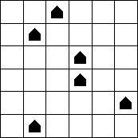
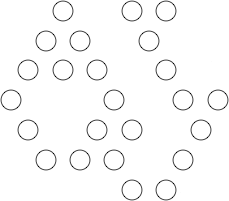
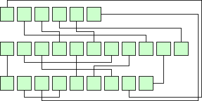

Holiday Puzzles 2012
1. REINDEER GAMES

| |
| |
Each letter of the reindeer names below stands for a different digit 0-9 or standard arithmetic symbol ( + – × / = ). If each name is a valid mathematical equation, what are the equations? There are two solutions.
DASHER DANCER COMET
|
|
| 2. NUMBER WREATH | |
Put the digits 1 through 5 into five of the circles below. If a circle contains the digit n, then the circles that are n clockwise and n counterclockwise from that circle should also contain digits.
| | | |
|
| 3. HALFWAY HOUSES | |
Santa already has six 1×1 structures on his North Pole property. He needs to expand, so he plans to build six more 2×1 structures. These new structures will not be in neighboring regions, even diagonally. And after expansion, exactly half the regions in every row and column will contain a structure. Where will Santa be building?
|  | | | |
|
| 4. TRIPOD IN THE SNOW
Mrs. Claus took 8 pictures with her camera, and her tripod left some holes in the snow. The tripod makes holes at the corners of an equilateral triangle of various sizes. If each placement of the tripod made 3 new holes, determine where the tripod was during her 8 photos.
|  | | | |
|
| 5. AROUND THE CHRISTMAS TREE |
The three words below are two things one sometimes sees on a Christmas tree, and one thing often done around a Christmas tree. Pairs of letters linked by a line are the same. What are these things?|  | | | |
|
Go back to Erich's Holiday Puzzles.